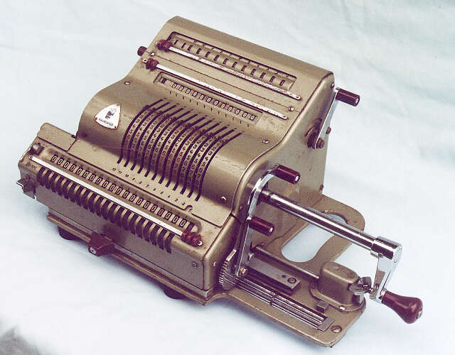

Neuroinformatics
 A Brunsviga hand cranked mechanical calculator as used by Hodgkin and Huxley to compute numerically the solutions to their differential equations for the action potential in the squid giant axon in 1952.
{kind=link}
 A more recent 2007 IBM Blue Gene/P supercomputer used in the Blue Brain Project,
with thousands of processors. (Image credit:
Wikipedia.)
A more recent 2007 IBM Blue Gene/P supercomputer used in the Blue Brain Project,
with thousands of processors. (Image credit:
Wikipedia.)
{kind=link}
Neuroinformatics is concerned with developing computational techniques for understanding the brain. Specifically, processing and analysing experimental data, and simulating models. This work is becoming increasingly important as neuroscientists study larger and more detailed systems, requiring the use of high performance computational techniques which are not, as yet, easily accessible for non-experts. Our research is about leveraging modern, heterogeneous forms of computing such as GPUs, FPGAs, and the SpiNNaker spiking neural network supercomputer, but making them accessible to neuroscience researchers.
We currently work in two main areas of neuroinformatics with associated software packages: simulating spiking neural networks (the Brian simulator); and, analysing data recorded from multi-channel electrodes in the brain (KlustaSuite).
If you are interested in working on these types of problems, please see our openings page and the list of suggested research topics. See also the list of neuroinformatics publications below for an idea of the sort of research we have done in this field in the past.
Publications in neuroinformatics
-
Stimberg M, Goodman DFM, Brette R, De Pittà M
Modeling neuron-glia interactions with the Brian 2 simulator.
-
Rossant C, Kadir SN, Goodman DFM, et al.
(2016)
Spike sorting for large, dense electrode arrays.
Nature Neuroscience doi: 10.1038/nn.4268
-
Stimberg M, Goodman DFM, Benichoux V, Brette R
(2014)
Equation-oriented specification of neural models for simulations.
Frontiers in Neuroinformatics 8:6. doi: 10.3389/fninf.2014.00006 -
Kadir SN, Goodman DFM, Harris KD
(2014)
High-dimensional cluster analysis with the masked EM algorithm.
Neural Computation 26:11. doi:10.1162/NECO_a_00661
-
Goodman DFM, Brette R
(2013)
Brian simulator.
Scholarpedia 8(1):10883 -
Goodman DFM, Brette R
(2013)
Brian Spiking Neural Network Simulator.
Encyclopedia of Computational Neuroscience SpringerReference -
Rossant C, Fontaine B, Goodman DFM
(2013)
Playdoh: a lightweight Python package for distributed computing and optimisation.
Journal of Computational Science 4(5):352-259
-
Brette R, Goodman DFM
(2012)
Simulating spiking neural networks on GPU.
Network: Computation in Neural Systems 23(4)
-
Fontaine B, Goodman DFM, Benichoux V, Brette R
(2011)
Brian Hears: online auditory processing using vectorisation over channels.
Frontiers in Neuroinformatics 5:9. doi: 10.3389/fninf.2011.00009 -
Brette R, Goodman DFM
(2011)
Vectorised algorithms for spiking neural network simulation.
Neural Computation 23:6 -
Rossant C, Goodman DFM, Fontaine B, Platkiewicz J, Magnusson AK, Brette R
(2011)
Fitting neuron models to spike trains.
Frontiers in Neuroscience 5:9. doi: 10.3389/fnins.2011.00009
-
Goodman DFM
(2010)
Code Generation: A Strategy for Neural Network Simulators.
Neuroinformatics 8, no. 3 (9). doi:10.1007/s12021-010-9082-x -
Rossant C, Goodman DFM, Platkiewicz J, Brette R
(2010)
Automatic fitting of spiking neuron models to electrophysiological recordings.
Frontiers in Neuroinformatics doi:10.3389/neuro.11.002.2010
-
Goodman DFM, Brette R
(2009)
The Brian simulator.
Frontiers in Neuroscience 3(2), doi:10.3389/neuro.01.026.2009 -
Brette R, Goodman D
(2009)
Brian: a simple and flexible simulator for spiking neural networks.
The Neuromorphic Engineer doi: 10.2417/1200906.1659
-
Goodman D, Brette R
(2008)
Brian: a simulator for spiking neural networks in Python.
Frontiers in Neuroinformatics 2(5), doi:10.3389/neuro.11.005.2008